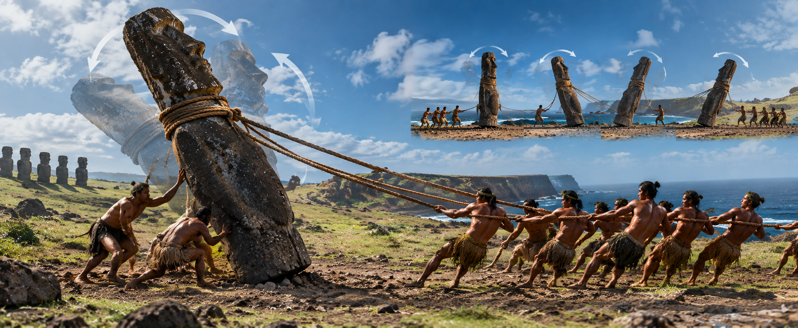

Easter Island (or Rapa Nui) is one of the most remote places on the planet, located in the middle of the Pacific Ocean. Despite their extreme isolation, the ancient civilization that lived there carved and transported nearly a thousand giant stone statues known as Moai. For decades, scientists tried to understand how a society without wheels or draft animals managed such an engineering feat.
The End of the Ecological Collapse Myth
For a long time, the most widely accepted theory stated that the people of Rapa Nui destroyed their own island. It was believed that they had cut down all the trees to use the trunks as rollers to drag the Moai, causing an ecological disaster. However, recent studies led by archaeologists Carl Lipo and Terry Hunt proved that this is a myth.
Modern excavations revealed that the inhabitants did not drag the stones on their backs. Analysis of the shape of the Moai abandoned along the paths showed that they were carved with a protruding belly, creating the perfect center of gravity to keep them standing upright.

The Statues That Walk
The oral tradition of the island's natives always claimed that the statues "walked" to their destinations thanks to a spiritual power called mana. In 2012, scientists decided to test whether this was physically possible. They created a 5-ton replica of a Moai and tied ropes to its head.
The Simple Example: The Refrigerator Technique
To understand how this worked, imagine that you need to move a very heavy refrigerator across your kitchen. You don't try to lift it completely off the ground, right? Instead, you tilt it slightly to the left and push the right side forward. Then, you tilt it to the right and advance the left side. By rocking the refrigerator from side to side, you make it "walk" across the room.
That is exactly what the ancient Polynesians did. With teams of just 18 people holding ropes in three different directions, they rocked the statue from side to side. Because of the curved shape of the base, the Moai rocked and swiveled forward, literally appearing to walk across the earth.
Sustainability and Ingenuity
Science has proven that the Rapa Nui people were not an ignorant society that destroyed their home. On the contrary, they were masters of sustainability. They fertilized the island's poor soil with crushed volcanic rock to grow sweet potatoes and thrived in isolation for centuries.
Today, Easter Island is not a cautionary tale about environmental destruction, but rather an incredible testament to human intelligence, collaboration, and engineering.
Scientific References & Sources
- Hunt, T. L., & Lipo, C. P. (2011). The Statues that Walk: Unraveling the Mystery of Easter Island. Free Press.
- National Geographic: Easter Island's Moai Statues "Walked" to Their Platforms.
- Smithsonian Magazine: Recreating the Easter Island Statue Walk.